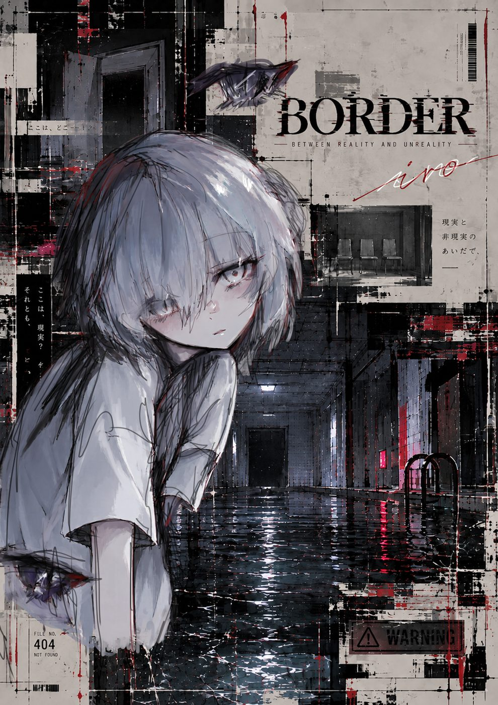
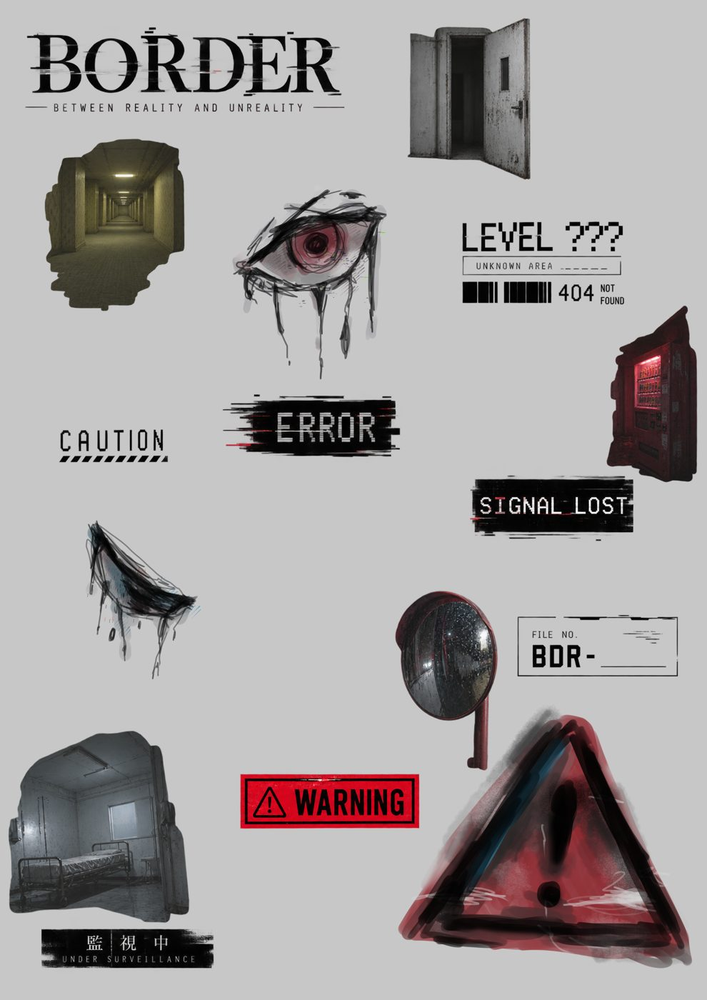

BORDER
BETWEEN REALITY AND UNREALITY
BORDER
ACCESS
これは、どこかの世界で
実際に存在したかもしれない
記録の断片です。
RECORDED
404Not Found

ABOUT
現実と非現実。
平面と立体。
人間と、そうではないもの。
私たちはいつから、
「こちら側」にいるのでしょうか。
BORDERは、バックルームをモチーフに、さまざまな"境界"を表現した作品群です。
2Dのキャラクターが、写実的な異空間の中に存在している。その違和感こそが、この作品の中心にあります。
ここに並ぶ記録は、その世界の一部を切り取ったものです。
すべてを説明するつもりはありません。
欠けたまま、持ち帰ってください。
ARCHIVE — RECOVERED RECORDS
回収された記録です。
暗い画面を指でなぞると、文字が浮かびます。
GOODS
展示会場で販売しています。
なくなり次第、終了です。
- クリアファイル¥500
- アンブレラマーカー¥500
- ステッカー¥400
- 手描きポストカード¥500

- お支払いは現金のみです。
- 不良品以外の返品・交換はできません。
- 画像はイメージです。実物と色味が異なる場合があります。
AFTER BORDER
展示終了後、ここに展示風景・制作過程・新しい記録が追加されます。
NOW LOADING — PLEASE WAIT.
NOW LOADING — PLEASE WAIT.